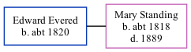

Edward Evered c1820 -
[ Home ] | [ Calendar ] | [ Surnames Index ] | [ Family History ]Edward Evered, the husband of Mary Ann Standing (the first cousin four-times-removed on the father's side of Nigel Horne), was born in Hartest, Suffolk, England c. 18201. In 1881, he lived in Leeds, West Yorkshire, England1.
Citations
- 1881 England Census Online publication - Provo, UT, USA: The Generations Network, Inc., 2004. 1881 British Isles Census Index provided by The Church of Jesus Christ of Latter-day Saints © Copyright 1999 Intellectual Reserve, Inc. All rights reserved. All use is subject to the (Relation to Head of House: HeadMarital Status: Married)
Family Tree
Generated by Ged2Site. Last updated on Jul 20, 2025